← Índice de los 69 tutes de IDA
Tute 15 · Dump y reconstrucción de la IAT
▶ video afín (mismo autor, en x64dbg): «17 Unpacking 3 - IAT Redirection»
INTRODUCCIÓN AL REVERSING CON IDA PRO DESDE CERO PARTE 15.
DUMPEADO y la RECONSTRUCCION DE LA IAT.
En la parte anterior vimos un par de métodos de los tantos que hay para detectar y llegar al OEP en un archivo empacado, ahora continuaremos con los dos pasos faltantes, el DUMPEADO y la RECONSTRUCCION DE LA IAT, tratando de explicar la misma.
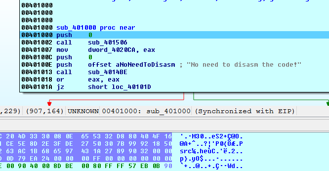
Volvemos a llegar al OEP y a REANALIZAR el programa y ya tenemos todo listo para DUMPEAR.
Ahora usaremos un script de IDC no de Python.
static main()
{
auto fp, ea;
fp = fopen("pepe.bin", "wb");
for ( ea=0x400000; ea < 0x40b200; ea++ )
fputc(Byte(ea), fp);
}
En el script ponemos la ImageBase o sea 0x400000 y la dirección máxima que vemos en el IDA en la pestaña SEGMENTS, de la última sección del ejecutable a DUMPEAR, en este caso la sección OVERLAY que es la última sección del ejecutable termina en 0x40b200.
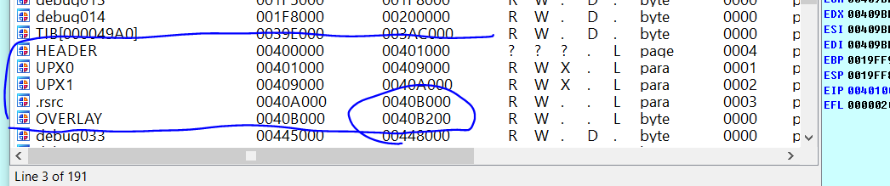
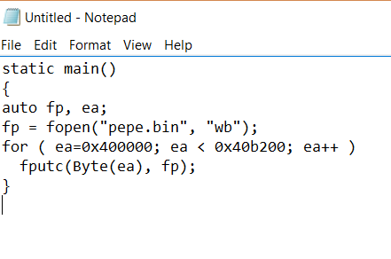
Lo guardamos con algún nombre por ejemplo DUMPER.idc
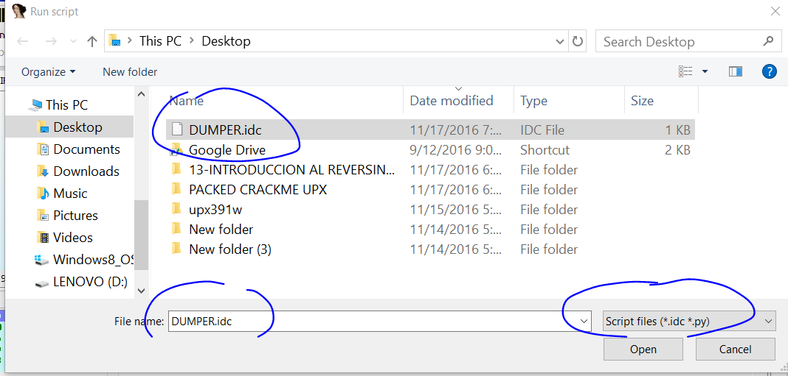
Y lo corremos en FILE-SCRIPT FILE vemos que acepta scripts tanto de Python como IDC, así que no hay problema.
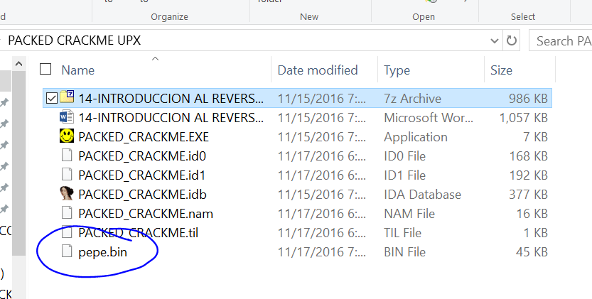
Hago una copia y lo renombro a extensión EXE. (si no ven las extensiones de los archivos deben cambiar esa opción en OPCIONES DE CARPETA)
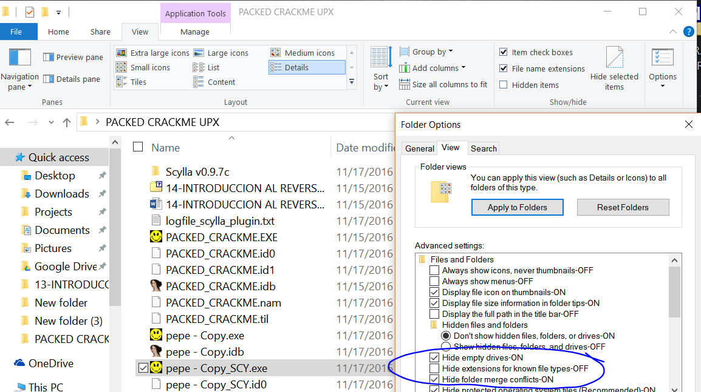
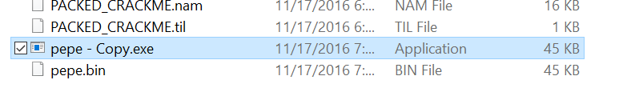
Vemos que ni icono tiene, así que aún faltan algunos pasos.
Adjunto está el PE Editor 1.7 lo descomprimimos y abrimos.
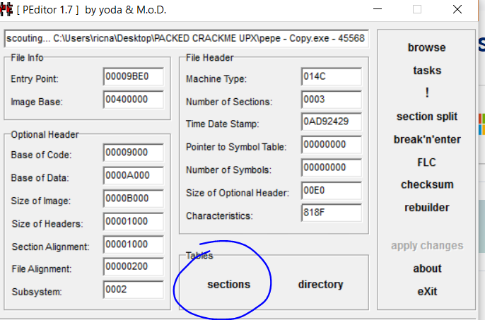
En SECTIONS.
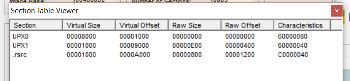
Hacemos click derecho en cada una de las secciones y aplicamos DUMPFIXER.
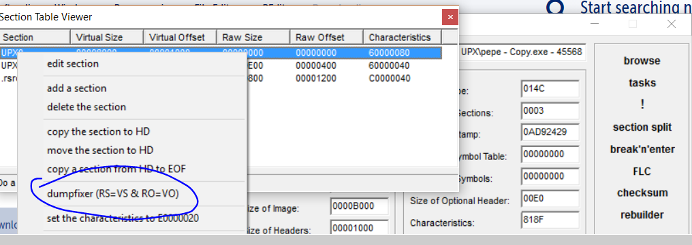
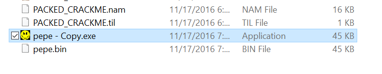
Vemos que ya estamos más cerca, al menos ya sale el icono, aunque aún no corre, porque falta reparar la IAT.
¿QUE ES LA IAT?
La IAT o IMPORT ADDRESS TABLE es una tabla ubicada en el ejecutable, que se utiliza cuando arranca el programa y allí guarda las direcciones de las funciones importadas que utiliza, para que el programa pueda correr en cualquier máquina.
Si la IAT esta correcta y le pasamos el ejecutable a otra persona, la IAT se llenará con los valores correspondientes a esa máquina sea cual sea la versión de Windows que tenga y se mantendrá la compatibilidad y funcionara.
O sea, la IAT se encontrará siempre en una posición determinada en cada ejecutable, y tendrá posiciones fijas para que cada función la llene, por ejemplo.
Recordamos de la parte anterior que quedo por explicar la diferencia entre la imagen superior que es del archivo empacado cuando estaba en el OEP antes de DUMPEAR y la del original.
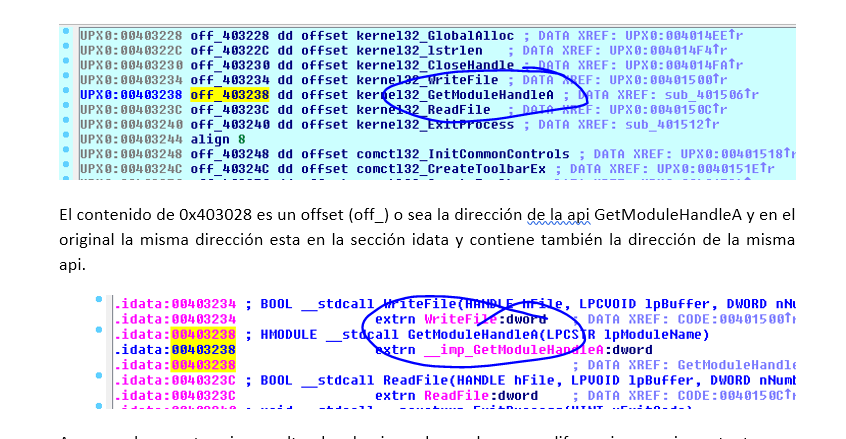
Ambas muestran la dirección 0x403238 y parecen tener el mismo contenido, ahora abramos también el archivo original.
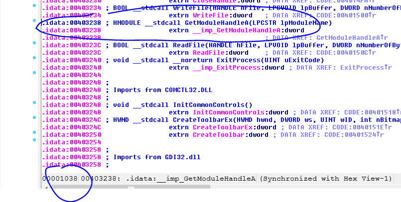
Vemos allí el FILE OFFSET 0x1038 para poder buscar en el HXD en el ejecutable original.
Lo abro con HXD al original.
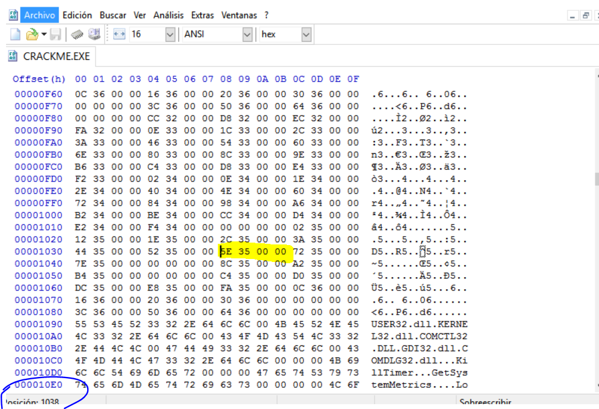
Vemos que el contenido en el offset 0x1038 es 0x355e.
Si le sumo 0x355e a la ImageBase 0x400000 nos da 0x40355e y que hay allí?.
Para verlo deberíamos cargar el original con MANUAL LOAD para que cargue todas las secciones del ejecutable.
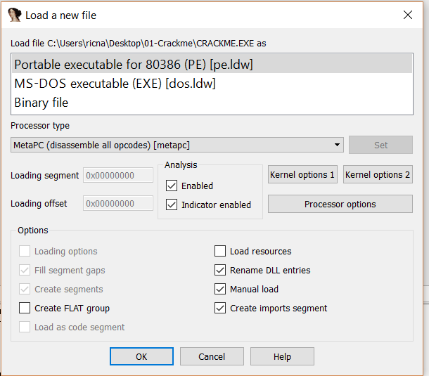
Aceptamos todas las secciones y cuando arranca vamos a 0x40355e y vemos a la derecha el nombre de la api GetModuleHandleA.
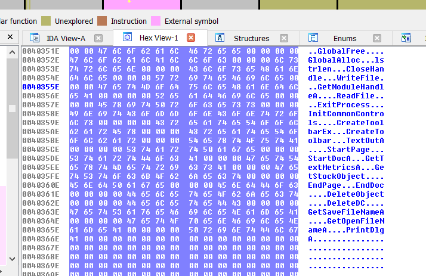
Así que el sistema cuando arranca, si miramos la imagen inferior, el programa va trabajando en todos esos cajoncitos.
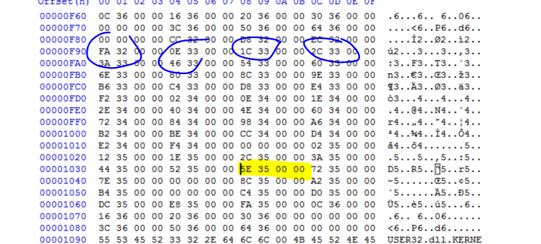
Y a cada uno le suma al contenido de la ImageBase y busca la string de la función correspondiente, y de esa string resuelve en tiempo de ejecución la dirección en nuestra máquina, como por ejemplo en este caso busca la dirección de GetModuleHandleA en nuestra máquina y machaca el 5e 35 con la dirección de la api.
Por eso un ejecutable funciona en cualquier máquina, porque siempre buscara en cada entrada de la IAT el nombre de la api correspondiente y lo resolverá al arrancar, por lo cual siempre la dirección que contenga será válida aunque diferente de máquina a máquina, sin embargo la dirección del cajoncito de GetModuleHandleA en todas las maquinas será el mismo en todos los ejecutables sin randomizar como este, lo que cambiara será el contenido.
Por eso en cualquier maquina si hago
CALL [0x403238]
Siempre funcionara porque 0x403238 es la entrada de la IAT para GetModuleHandleA, lo que variara será el contenido que el sistema guardara machacando el valor original 5e 35, que apuntaba a la string si le sumamos la base.
Sin cerrar los otros dos IDA con el empacado parado en el OEP y el original, en un tercer IDA abro el DUMPEADO que acabo de hacer pepe - Copy.exe.
En el mismo voy a la misma entrada de la IAT en 0x403238
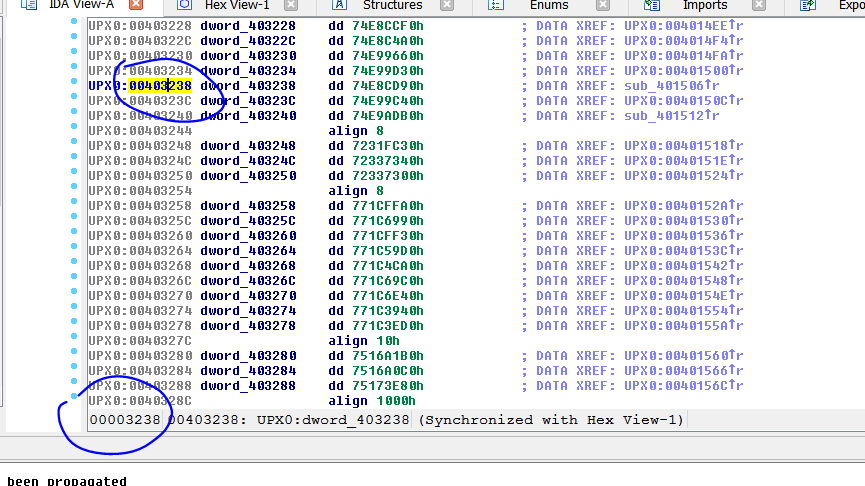
Vemos aquí el file offset es 0x3238 no coincide con el original por el DUMPFIXER que hizo que el tamaño en el disco sea igual al tamaño virtual, lo que cambia los offsets, igual será la entrada de la IAT de la api GMHA.
Si lo abrimos en HXD y vamos a 0x3238.
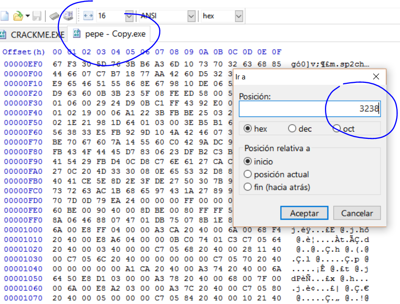
Vemos allí
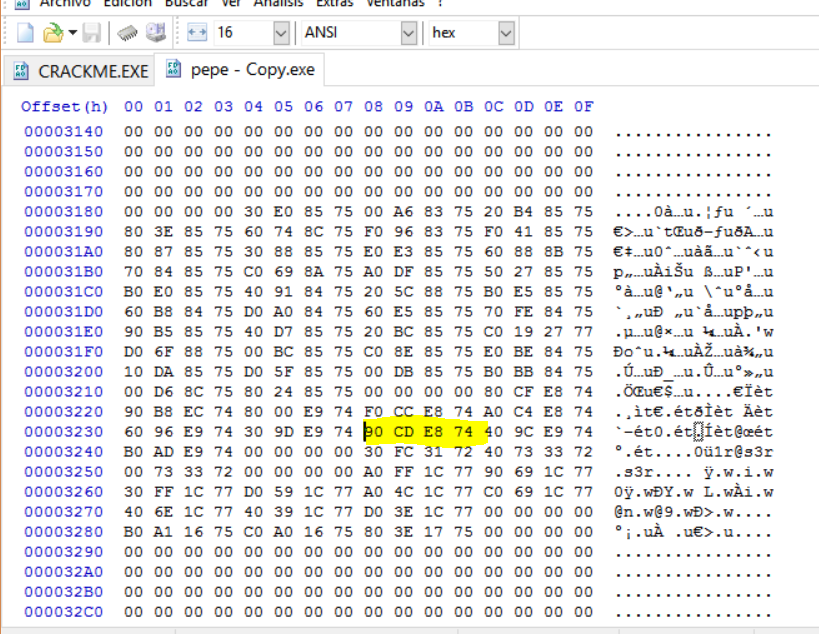
Vemos que lo que tenemos allí es una dirección de una api y no un offset para sumarle a la ImageBase para hallar el nombre de la api.
Como el sistema cuando arranco el empacado resolvió la dirección de la api y guardo su dirección allí, al dumpear lo que hay es eso la dirección de la api GetModuleHandleA para el empacado.
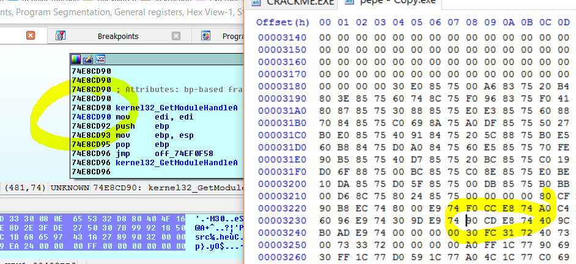
¿Y cuál es el problema sino reconstruimos la IAT?
Es que el sistema al arrancar busca allí en la entrada de la IAT el valor para sumarle a la ImageBase y buscar una string para resolver y eso se rompió pues al dumpear quedo guardada la dirección final, y el programa crasheara al arrancar, al no poder ir llenando las entradas de la IAT como corresponde.
Bueno para terminar con esto, el tema es que hay que arreglar la IAT y restaurar todos esos offsets que apuntaban a las strings con los nombres de la api, y esto no se hace a mano, es muy largo, para eso usaremos una tool llamada Scylla.
SCYLLA.
https://tuts4yoututs4you.com/download.php?view.3503
password del rar =tuts4you
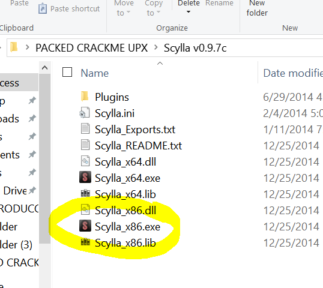
Lo arranco
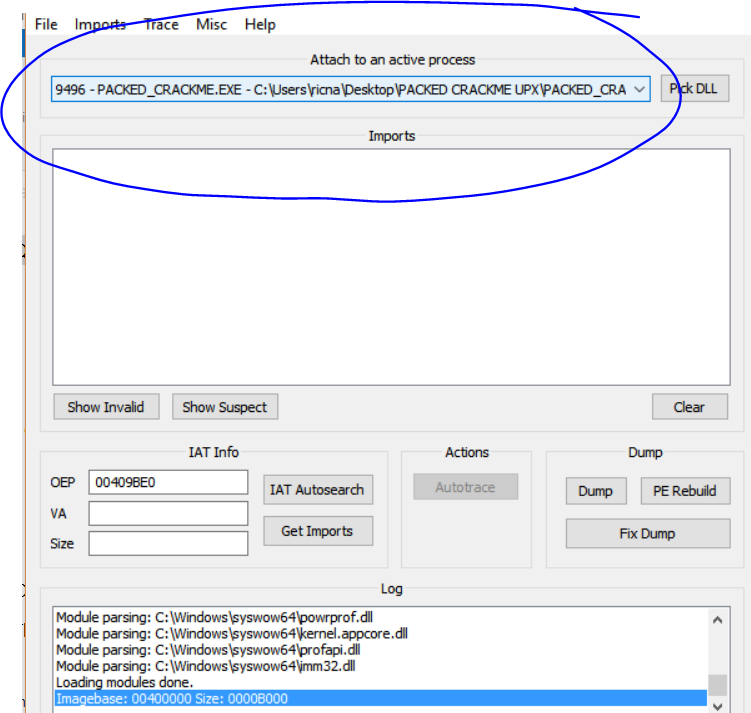
En ATTACH TO AN ACTIVE PROCESS elijo del menú desplegable, el proceso del empacado que está detenido aun en el IDA en el OEP.
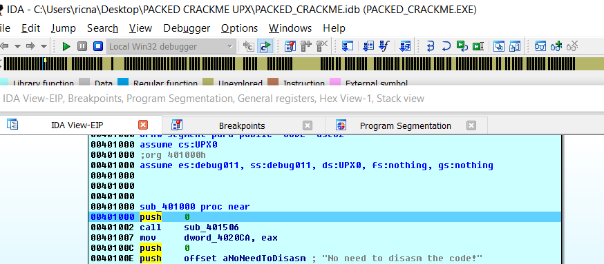
Le cambiamos el OEP a 401000
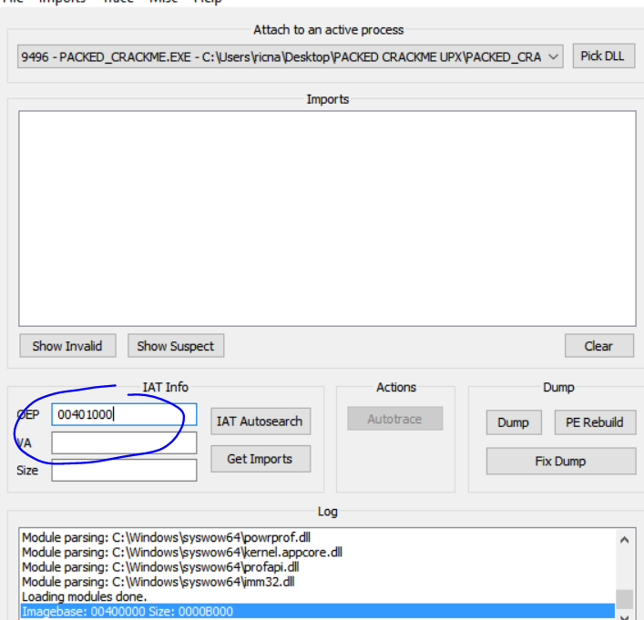
Apretamos IAT AUTOSEARCH
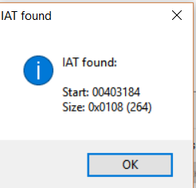
O sea ahí dice que la IAT empieza en 00x403184 y termina 0x108 mas adelante.
Y luego GET IMPORTS.
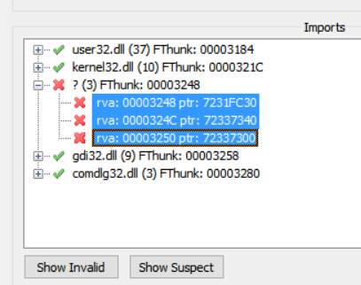
Vemos que resolvió todo menos tres entradas que las muestra al apretar SHOW INVALID
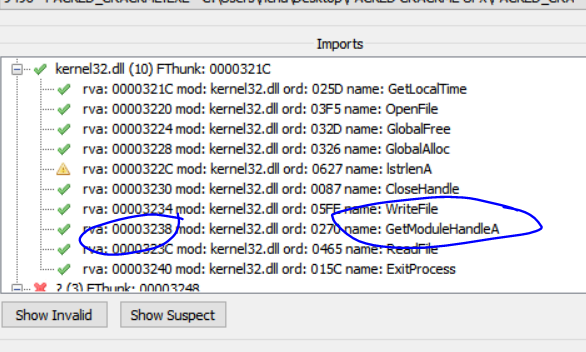
Por otro lado vemos que el offset 3238 en el empacado sabíamos que correspondía a GetModuleHandleA y esa está bien resuelta, podemos mirar en el empacado las direcciones de las entradas invalidas 0x403248 en adelante, a ver que son.
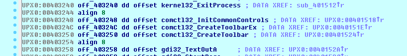
Vemos que son las entradas de comctl32,
Y si hago click derecho en las entradas invalidas del Scylla y elijo SCYLLA PLUGIN-PE COMPACT las reparara bien.
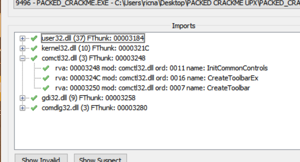
Coinciden con las que habíamos visto que eran
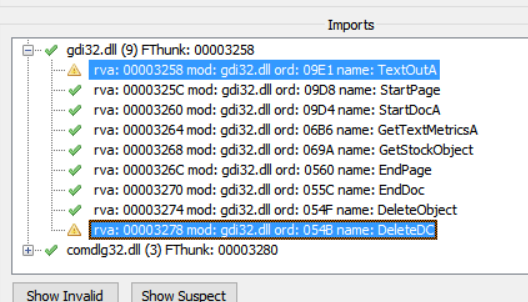
Si apretamos SHOW SUSPECT veamos si están correctas las dos sospechosas yendo a 0x403258 y 0x403278.
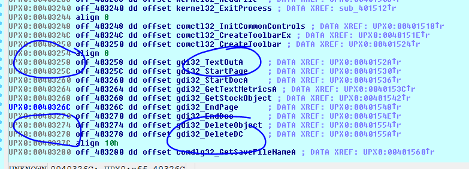
Se ven correctas así que podemos apretar el botón FIX DUMP
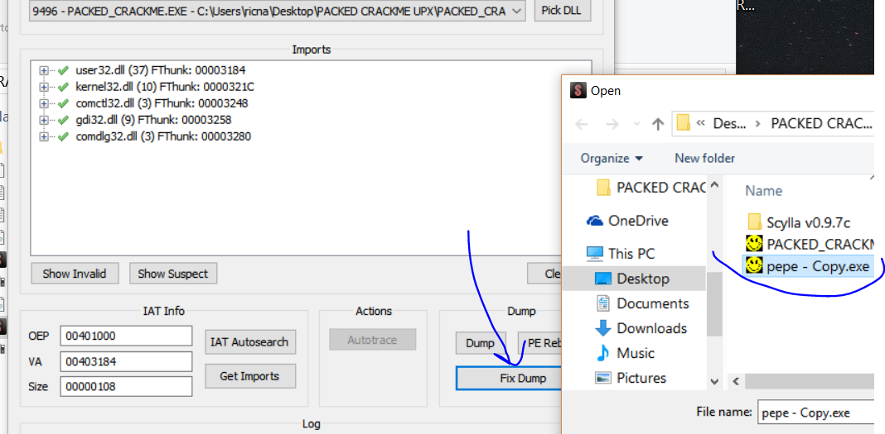
Lo guarda al reparado como pepe-Copy_SCY.exe y veo que funciona.
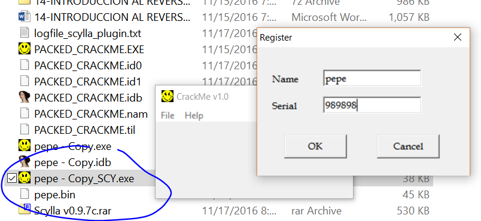
Vemos que al abrir el que desempacamos en el IDA ya arranca del OEP 0x401000 y que se ven los nombres de las apis como en el original ya que están bien resueltas.
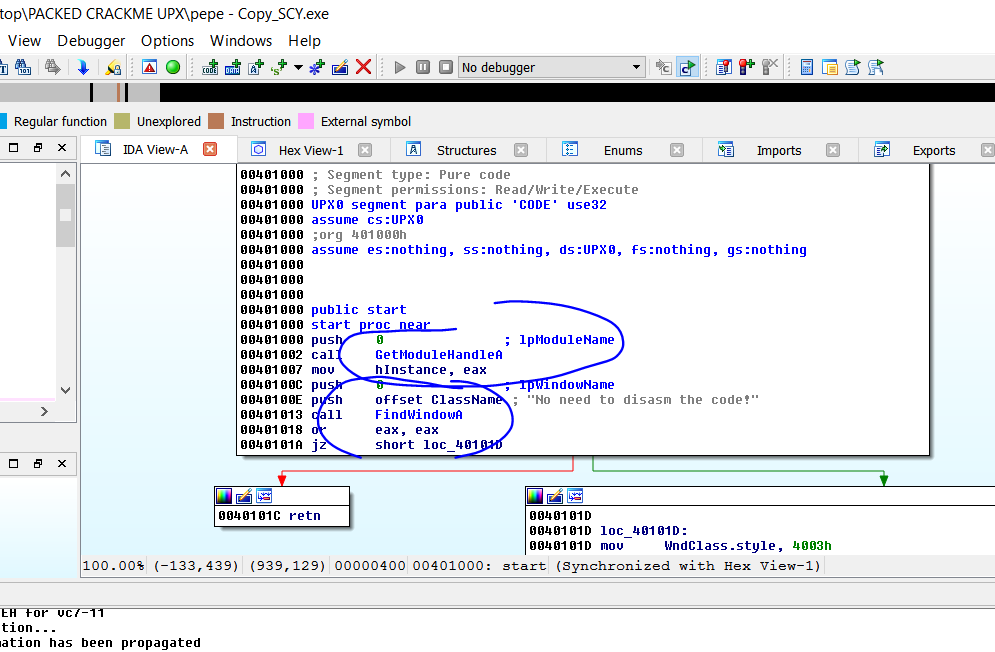
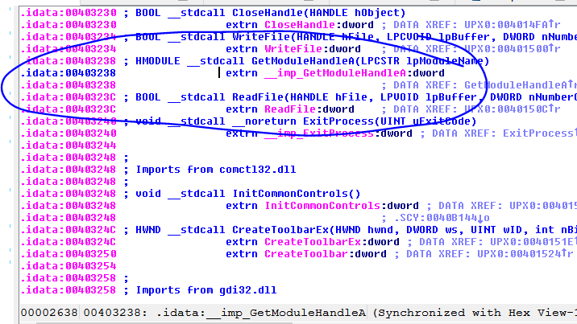
Incluso la parte de la IAT también se ve como el original.
Bueno hemos desempacado nuestro primer y sencillo packer, más adelante veremos otros más complejos.
Hasta la parte 16
Ricardo Narvaja